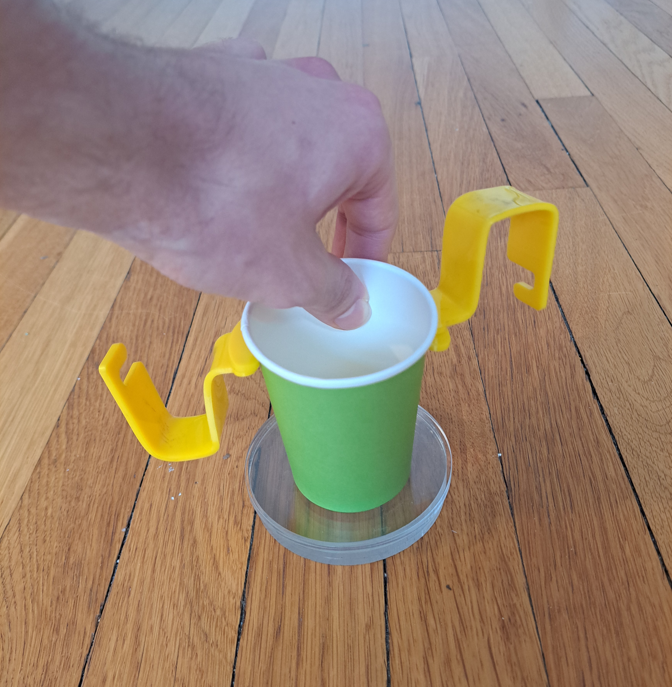
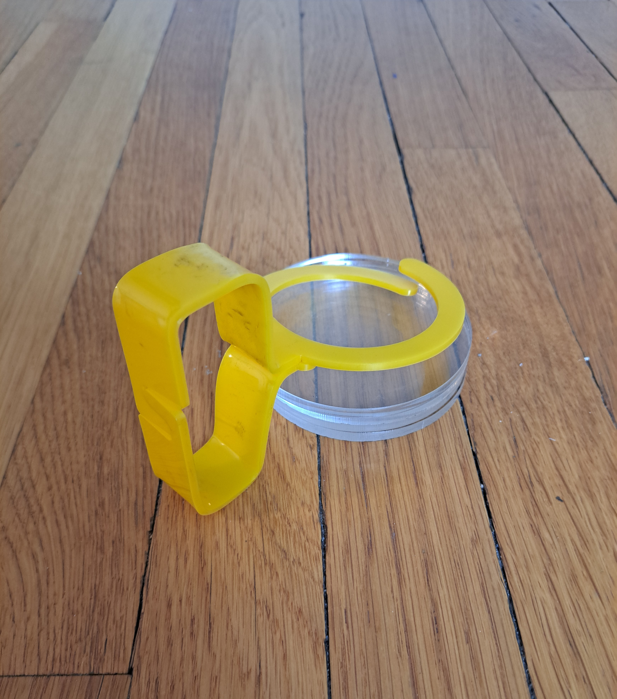
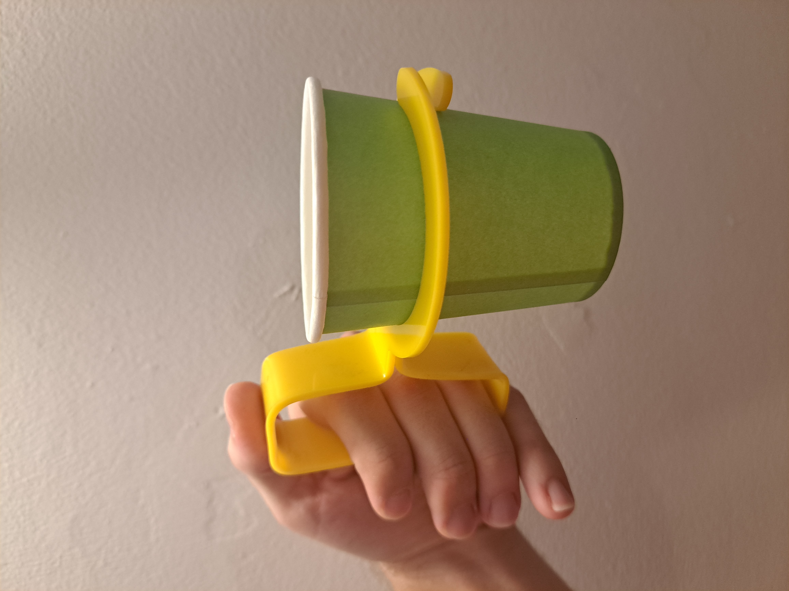

CMU Design and Fabrication
Home
About
Projects
Contact
Project 1: Credit card cup holder
  
<<
>>
This is the description of the project.
 CMU Design and Fabrication
CMU Design and Fabrication
CMU Design and Fabrication
CMU Design and Fabrication